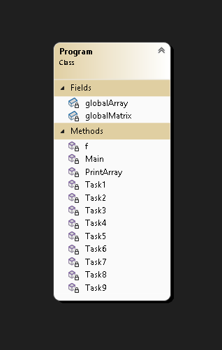

Ознайомитись з особливостями використання масивів, матриць та рядків у мові C#. Набути навичок розробки консольних застосунків з використанням алгоритмів пошуку, сортування та математичних обчислень.
Створити консольний застосунок мовою C#. Вхідні дані вводити з клавіатури. Результати виводити на консоль. Використати методи класів Console, Convert в процесі введення та виведення даних. Реалізувати 9 завдань у вигляді методів класу Program. Виклик методів здійснити за допомогою меню, застосувавши оператор вибору switch. Усі завдання варіанта реалізувати в одному консольному проєкті Lab2.

Під час виконання лабораторної роботи було розроблено консольний застосунок мовою C#, який реалізує 9 завдань згідно з варіантом 16. Було застосовано алгоритми сортування (бульбашкою), пошуку (бінарний, лінійний), генерації чисел (Фібоначчі, центровані трикутні числа), а також метод бісекції для знаходження коренів нелінійного рівняння. Програма успішно пройшла тестування та обробляє помилки вводу за допомогою `TryParse`.